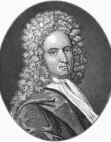

Родился в Лондоне в семье мясоторговца пресвитерианина Джеймса Фо (1631—1712), получил духовное образование и готовился в пасторы, но от церковной карьеры отказался. Занимался коммерческой деятельностью. В 1681 году начал писать стихи на религиозные темы.
Принимал участие в восстании герцога Монмута против Якова II Стюарта и сражении при Седжмуре 6 июля 1685 года, проигранном мятежниками.
Тема
Даниель Дефо
Биография
Окончив Ньюингтонскую академию, где изучал греческий и латинский языки и классическую литературу, стал приказчиком у оптового чулочного торговца. По торговым делам часто бывал в Испании, Португалии и Франции, где познакомился с жизнью Европы и совершенствовался в языках.
Впоследствии сам был одно время владельцем чулочного производства и затем сначала управляющим, а потом и владельцем большого кирпично-черепичного завода, торговал вином, но разорился[3].

Тема
Даниель Дефо
Биография
В 1688 году Вильгельм Оранский вступил в пределы Англии, и Дефо немедленно присоединился к его армии. Дефо был вдохновлён мыслью о поддержке планов горячо любимого им короля Вильгельма; он имел одну цель — защиту высокопочитаемого, чуть ли не обожаемого им героя от клеветы врагов. За это время Дефо написал целый ряд замечательнейших своих произведений. Наиболее выдающиеся между ними: «Опыт о проектах» (An Essay upon Projects), в котором идёт речь об улучшениях в делах политики, торговли, педагогики и благотворительности (первое произведение Дефо, написанное в 1697 году); «Защитительное слово бедняка» (The poor man’s Plea), в котором автор остроумно защищает бедняков от взводимых на них напраслин и предлагает лицемерным реформаторам исправиться прежде всего самим; «Прирождённый англичанин» (The true-born Englishman) — сатира, являющаяся отповедью только что перед тем появившемуся в печати памфлету, направленному против личности Вильгельма III.
Тема
Даниель Дефо
Биография
Всё это обратило внимание Вильгельма на Дефо. Талантливый лавочник был призван во дворец; король давал ему темы для политических памфлетов и не раз имел случай пользоваться его советами.
После смерти Вильгельма III в 1702 году положение Дефо существенно изменилось. Вступление на престол королевы Анны Стюарт положило начало реакции, характер которой был, главным образом, клерикальным и, в некоторой степени, якобитским.